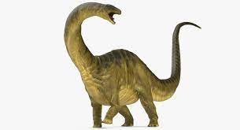

Brontosaurus
(gr. βροντή, brontē 'trueno' y σαῦρος, sauros 'lagarto', "lagarto trueno"), o brontosaurio en castellano, es un género de dinosaurio saurópodo diplodócido que vivió a finales del periodo Jurásico hace aproximadamente entre 155 a 152 millones de años en la época del Kimmeridgiense de Norteamérica. Se conocen tres especies de este género.
Brontosaurus fue originalmente nombrado por su descubridor Othniel Charles Marsh en 1879. Brontosaurus por mucho tiempo había sido considerado como un sinónimo más moderno de Apatosaurus, y la especie original, Brontosaurus excelsus fue reclasificada como A. excelsus en 1903. Sin embargo, un extenso estudio publicado en 2015 concluyó que Brontosaurus es un género válido de saurópodo y distinto de Apatosaurus.
En el mismo estudio se reclasificó a dos especies que habían sido consideradas anteriormente como parte de Apatosaurus como Brontosaurus parvus y Brontosaurus yahnahpin.1 Las especies de Brontosaurus se extienden en un rango temporal de 155 a 152 millones de años, durante la época del Kimmeridgiense de la zona inferior a media de la Formación Morrison en Wyoming y Utah, en Estados Unidos.3